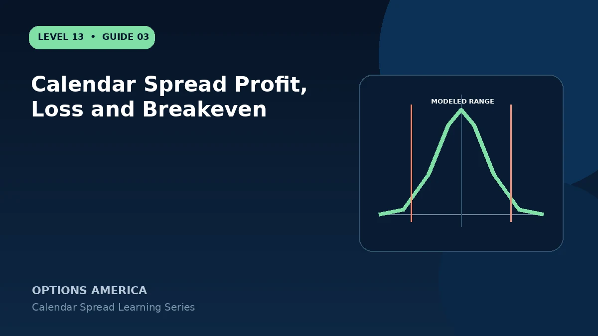

Understand why calendar spread maximum profit and breakevens are estimates rather than fixed expiration formulas.
Why payoff is curved
The two options do not expire together, so the later option cannot be reduced to intrinsic value at the first expiration. Its price must be modeled using remaining time, IV, rates, dividends and the underlying price.
Maximum loss
For a standard long calendar entered for a debit, the debit is commonly the practical maximum loss if both legs remain paired. Closing or being assigned on only one leg can create a different exposure.
Estimated maximum profit
Modeling often shows the highest value near the shared strike at front expiration. The number changes when the assumed back-month IV changes, so a platform's peak is a scenario, not a guaranteed maximum.
Estimated breakevens
The two displayed breakevens also depend on the chosen date and volatility assumptions. Recalculate the graph using several IV shifts instead of treating one pair of points as permanent.
A practical example
A platform estimates a $3.20 peak for a calendar costing $1.60, assuming back-month IV stays at 28%. If IV falls to 22%, both the peak and estimated breakevens contract.
This simplified example uses selected price, time and volatility assumptions; live results will differ. Live option prices also reflect the underlying price, time decay, rates, dividends, liquidity and transaction costs. Greeks are theoretical estimates, not guarantees.
Frequently asked questions
Is there a simple breakeven formula?
No, not like a same-expiration vertical spread.
Can loss exceed the debit?
Assignment or unpaired-leg actions can create additional exposure.
Why do broker graphs differ?
They may use different IV, pricing and date assumptions.
Continue the Calendar Spreads cluster
Explore related guides: Calendar Spread Example With Price and Volatility Scenarios · Calendar Spread vs Diagonal Spread · Implied Volatility and Vega in Calendar Spreads. For a structured sequence, use the free Level 13 – Calendar Spreads course.
Options involve risk and are not suitable for every investor. This material is educational and is not investment, tax or legal advice. Greeks are theoretical estimates, and contract terms and broker requirements can vary.